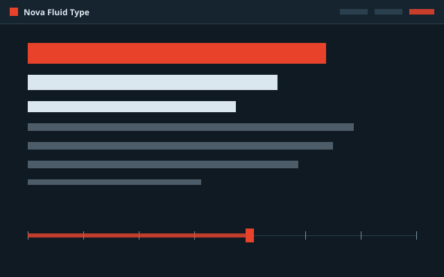

Nova Fluid Type
Nova Fluid Type Nova Social Proof
Nova Social Proof Forge
Forge Forge Mobile Type
Forge Mobile Type Prism Fluid Type
Prism Fluid Type Helix Typography
Helix Typography Bloom Components
Bloom Components Design Bridge
Design Bridge Token Workshop
Token Workshop The Handoff
The Handoff Spectrum Color
Spectrum Color Project Dashboard
Project Dashboard Nova Campaign Visuals
Nova Campaign Visuals Bloom Onboarding Flow
Bloom Onboarding FlowNova Fluid Type
Redleaf Design System — Fluid Typography Migration
Lit 3.3
Vite 7
TypeScript
Storybook 10
Migration of Redleaf typography from breakpoint-based (19px → 21px jump at 992px) to fluid scaling with CSS clamp() and Utopia. Two type scales (1.1 Major Second for mobile, 1.25 Major Third for desktop), 11 font-size steps, 14px minimum size. 42 web components, 8 themes for different sub-brands.
Key Features
- 11 fluid font-size steps via clamp()
- Utopia methodology: 320px–1200px viewport
- 42 Lit-based web components
- 8 multi-brand themes
- Demo HTML + viewport viewer for stakeholders
Challenges
- Precise Utopia clamp() calculation without rounding errors
- Keep heading mappings unchanged (no breaking changes)
- Control scaling of large headings (up to 80px)
- 14px floor for accessibility across all viewports
- Keep 8 themes compatible simultaneously
Token Architecture & Details
Package: @redleaf/design-system (GitHub Package Registry)
Export: ESM-only, TypeScript Declarations
CSS: PostCSS + Custom Media + Nesting + Autoprefixer
Fonts: Custom Sans (Body), Custom Serif (Headlines), System Fonts
Viewport Range: 320px (Mobile Base 19px) → 1200px (Desktop Base 21px)
Type Scales: 1.1 Major Second (Mobile), 1.25 Major Third (Desktop)
Release: Release Please + Conventional Commits
Export: ESM-only, TypeScript Declarations
CSS: PostCSS + Custom Media + Nesting + Autoprefixer
Fonts: Custom Sans (Body), Custom Serif (Headlines), System Fonts
Viewport Range: 320px (Mobile Base 19px) → 1200px (Desktop Base 21px)
Type Scales: 1.1 Major Second (Mobile), 1.25 Major Third (Desktop)
Release: Release Please + Conventional Commits
Show Documents & Configuration
| Type | Actions | File | Description | Size | Updated |
|---|---|---|---|---|---|
| Project | open | README.md | Project documentation | 2,6 KB | 2026-03-13 07:04 |
| Project | open | CHANGELOG.md | Version history | 253,2 KB | 2026-03-13 07:04 |
| Code | open | package.json | NPM configuration | 3,1 KB | 2026-03-13 07:04 |
| Code | open | tsconfig.json | TypeScript configuration | 0,7 KB | 2026-03-13 07:04 |
| Claude | open | CLAUDE.md | Claude Code project instructions | 1,6 KB | 2026-03-22 11:30 |
Migrate typography tokens to fluid scale
DEMO-001
Open

assets/previews/
Viewer (local)
Demo (local)
~/projects/nova-fluid-type
~/.claude/projects/...-nova-fluid-type
github.com/redleaf/design-system
{kind=link}